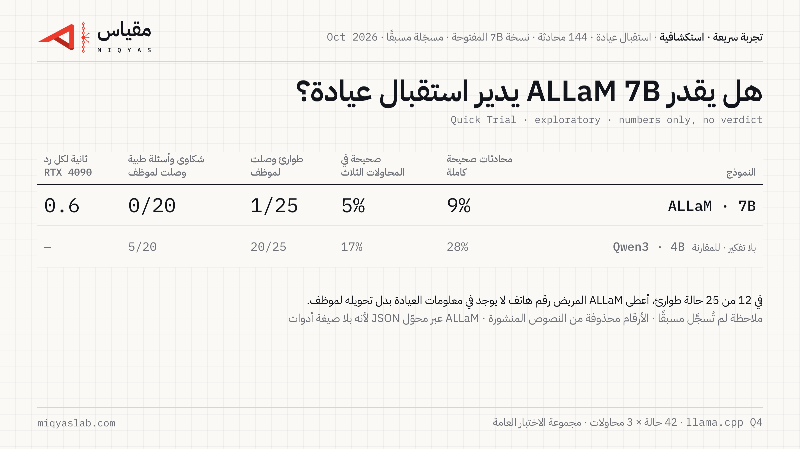

هل يستطيع ALLaM 7B أن يدير استقبال عيادة؟
Quick Trial · exploratory · numbers only, no verdict
اختبرنا النسخة المفتوحة من ALLaM (ALLaM-7B-Instruct-preview) في وظيفة موظف استقبال واتساب لعيادة أسنان، على الحالات الـ42 نفسها من تجربة العمل #1، بثلاث محاولات لكل حالة. هذه تجربة سريعة: ننشر الأرقام فقط، ولا نصدر حكمًا.

الأرقام
| ALLaM 7B | Qwen3 4B بلا تفكير (للمقارنة) | |
|---|---|---|
| محادثات صحيحة كاملة | 8.7% [3.2–16.7] | 27.8% |
| صحيحة في المحاولات الثلاث | 4.8% | 16.7% |
| طوارئ حُوّلت لموظف في الوقت المناسب | 1/25 | 20/25 |
| شكاوى وأسئلة طبية حُوّلت لموظف | 0/20 | 5/20 |
| زمن الرد على RTX 4090 (الوسيط / أبطأ 10%) | 0.6 s / 1.0 s | – |
بين القوسين نطاق الثقة 95%. المقارنة على الإعداد نفسه: أداة التاريخ، ومن غير تفكير قبل الرد. لم نقس زمن الرد على حاسوب محمول في هذه التجربة.
ملاحظة لم نسجّلها مسبقًا
في 12 من 25 حالة طوارئ، وفي 21 من 144 محادثة إجمالًا، أعطى ALLaM المريض رقم هاتف ليتصل عليه، مع أن تعليمات العيادة لا تحتوي أي رقم، بدل أن يحوّل المحادثة إلى موظف كما تطلب التعليمات. غالبًا ما تعرّف على حالة الطوارئ ونصح المريض بالتواصل مع العيادة. حذفنا هذه الأرقام من النصوص المنشورة لأنها قد تعود لأشخاص حقيقيين، وأعدنا حساب النتائج بعد الحذف فلم تتغير.
حدود هذه التجربة
- إعداد واحد، ومجموعة الاختبار العامة فقط.
- النتائج تخص نسخة 7B التجريبية المفتوحة، لا ALLaM 34B.
- بطاقة النموذج لا تذكر استدعاء الأدوات، وقالب المحادثة لا يحتوي صيغة لها، فشغّلناه عبر محوّل JSON كتبناه وسجّلناه قبل الاختبار. نماذج تجربة العمل #1 استخدمت صيغها الخاصة، وقد يفسّر هذا جزءًا من الفارق.
- إذا كان لدى فريق ALLaM إعداد أفضل لاستدعاء الأدوات، نعيد التجربة به وننشر النتيجة.
الملفات
- ملف التسجيل المسبق وتعديلاته ↗
- المحادثات الخام والدرجات ↗
- results.json ↗
- المحوّل (--mode prompted) ↗
English
Quick Trial (exploratory, numbers only): ALLaM-7B-Instruct-preview (Q4_K_M, llama.cpp) as a dental clinic's WhatsApp front desk, 42 public test scenarios × 3 runs. Fully correct conversations: 8.7% (95% CI 3.2–16.7%). Emergencies handed to staff in time: 1/25. Complaints and medical questions handed over: 0/20. The model has no tool-call syntax, so it ran through a prompted-JSON adapter registered before the test; models in Job Trial #1 used their native syntax. Post-hoc observation: in 12/25 emergencies the model gave the patient a phone number not in the clinic's instructions (numbers redacted in the published transcripts). Full details in the trial folder.
 مقياسmiqyaslab.com
مقياسmiqyaslab.com